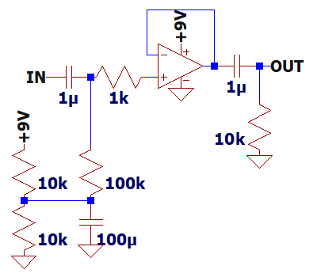

オペアンプの許容入力電圧調査
2026年06月29日 カテゴリー：実験等
正負の電源電圧ギリギリまで入出力できるという特性は、レールtoレールやフルスイングと呼ばれます。この特性を持つオペアンプや、一般的なオペアンプの許容入力電圧がどのくらいか実測しました。
＜回路図＞

電源9V、バイアス電圧4.5Vの非反転バッファーとしています。1kHzの正弦波を入力し、歪率が0.1%または1%となる電圧を確認します。
※ TL072は負電源側が歪みやすいので、バイアス電圧を少し上げる方が許容入力電圧が大きくなります。
| オペアンプ | 歪率0.1% Vp-p |
歪率1% Vp-p |
参考価格 | 備考 |
|---|---|---|---|---|
| NJM4558 | 5.3 | 5.7 | 30円 | |
| NJM4580 | 5.5 | 5.9 | 40円 | |
| NJM5532 | 5.5 | 5.8 | 70円 | |
| TL072C（TI） | 2.4 | 3.5 | $0.15 | |
| TL072C（ST） | 3.2 | 4.0 | $0.16 | |
| TL072G（UTC） | 3.6 | 4.3 | 30円 | |
| COS9162 | 3.6 | 8.5 | $0.30 | 電源電圧16Vまで 歪率2.9%＠9Vp-p |
| COS2182 | 7.1 | 8.5 | $0.71 | 入力が大きくなるにつれてノイズが増加 |
| COS2172 | 8.2 | 8.5 | $0.31 | 歪率3.0%＠9Vp-p |
| SGM8270 | 8.3 | 8.6 | $0.80 | 歪率2.4%＠9Vp-p |
| OPA2197 | 8.3 | 8.6 | $0.83 | 歪率2.6%＠9Vp-p |
18V対応で入出力レールtoレールのオペアンプはそれなりに高価になります。COS2172は特にコストパフォーマンスが良いようです。Cosine Nanoelectronicsは他社のICと型番の数字が同じものを製造していますが、スペックが違うので注意が必要です。